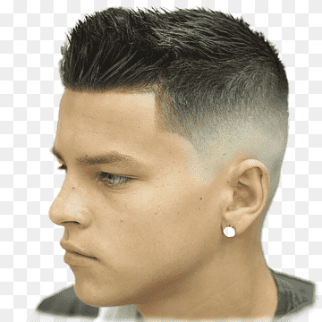

Gustavo, el barbero extraordinario, es reconocido por brindar un servicio excepcional a sus clientes. Su dedicación y pasión por su oficio lo distinguen en el mundo de la barbería. Con una atención personalizada y detallada, Gustavo se esfuerza por ofrecer a cada cliente una experiencia única y satisfactoria. soy la elección perfecta. Su pasión, habilidad y dedicación te garantizan un corte de cabello impecable y una experiencia de cliente memorable. Confía en Gustavo para realzar tu estilo y hacerte lucir impecable en cada visita a su barbería.
Mis Trabajos
